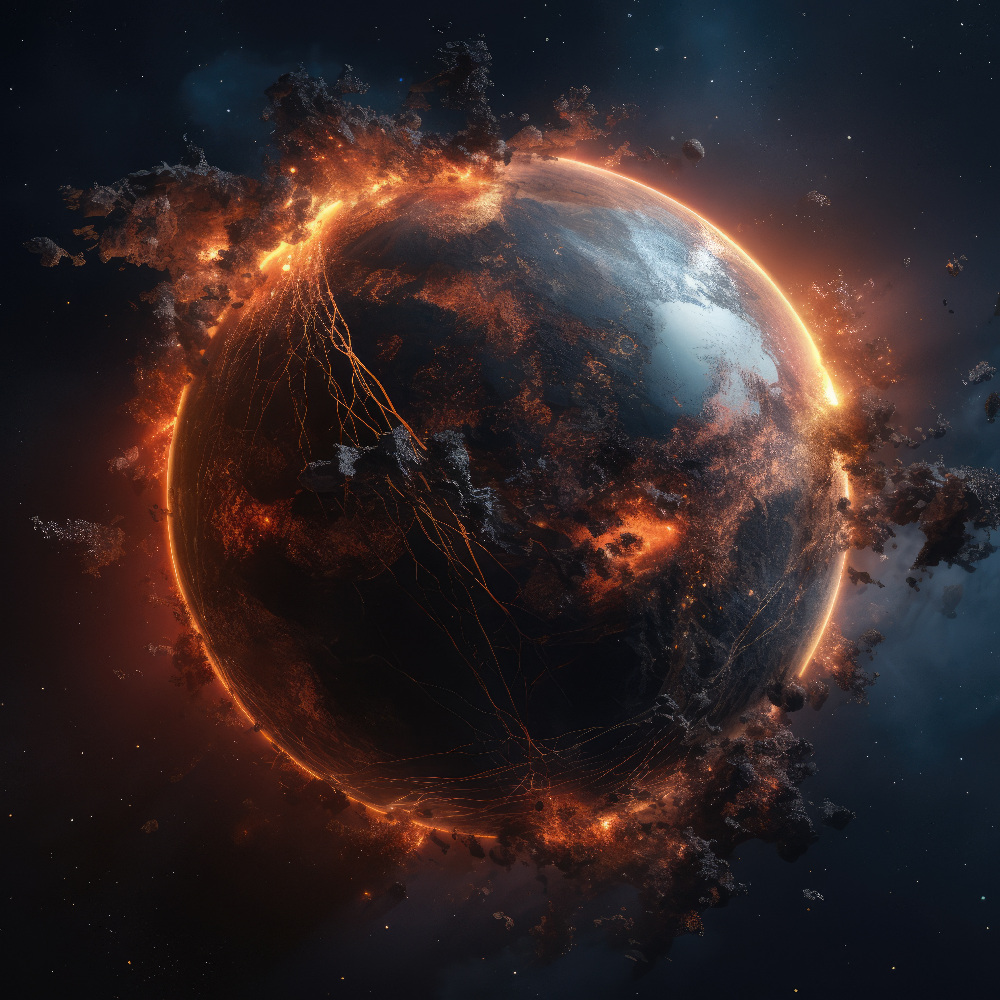

BEM VINDO AO MEU UNIVERSO
Bem-vindo ao nosso site de exploração do universo, onde as maravilhas do cosmos esperam por você!
SOL
O Sol é a estrela central do nosso Sistema Solar, uma esfera gigante de plasma quente que fornece luz e calor para todos os planetas e corpos celestes ao seu redor. Aqui estão algumas características principais:

TERRA
Nosso planeta, único conhecido por abrigar vida. Possui uma atmosfera que sustenta vida e uma superfície com vastos oceanos, continentes e uma diversidade impressionante de vida.
VENUS
É frequentemente chamado de "irmão gêmeo da Terra" devido ao tamanho semelhante, mas possui uma atmosfera densa composta principalmente de dióxido de carbono, que provoca um efeito estufa extremo. Sua superfície é escaldante, com temperaturas médias superiores a 450°C.
JUPITER
É o maior planeta do Sistema Solar, conhecido por sua enorme massa e fortes tempestades, incluindo a Grande Mancha Vermelha. Possui um sistema de anéis tênues e uma composição gasosa predominante.

MARTE
Conhecido como o "Planeta Vermelho" devido à sua superfície avermelhada. Tem uma atmosfera fina composta principalmente de dióxido de carbono e sua superfície apresenta montanhas, vales e vestígios de erosão e fluxo de água no passado.
MERCÚRIO
É o planeta mais próximo do Sol e o menor do Sistema Solar. Sua superfície é caracterizada por crateras e falhas devido à falta de atmosfera significativa para protegê-lo de impactos.
NOTUNO
Famoso por seu sistema de anéis espetacular, Saturno é o segundo maior planeta do Sistema Solar. Sua atmosfera também é predominantemente gasosa, similar à de Júpiter.
URANO
Tem um eixo de rotação altamente inclinado, quase perpendicular ao plano orbital do Sistema Solar, o que resulta em estações extremas que duram cerca de 21 anos terrestres cada. Urano é composto principalmente por gelo e gases.
SATURNO
O último dos planetas principais do Sistema Solar, Netuno é conhecido por seus ventos extremamente rápidos e sua coloração azul profunda devido à presença de metano em sua atmosfera. É um planeta gelado com um núcleo rochoso.
ASTRONAUTAS

BURACOS NEGROS

LUAS

FOGUETES

ESTRELAS
